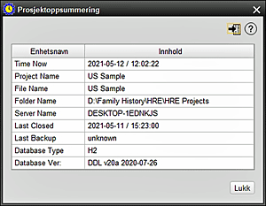

Dette skjermbildet lar brukeren undersøke et sammendrag av et nåværende HRE-prosjekt. 1. Prosjektoppsummeringen er en kort oversikt over et valgt HRE-prosjekt 2. Det kan sees på som et direkte alternativ fra PROJEKT-menyen, eller kan sees for et valgt åpent prosjekt fra flere av handlingsmenyene: Åpne prosjekt, Backup-prosjekt, Lukk prosjekt, Kopier prosjekt (kort sammendrag), Gi nytt navn til prosjekt, Slett prosjekt og Avslutt HRE (Lukk prosedyre) 3. Sammendraget viser:
|
|
Relaterte temaer |